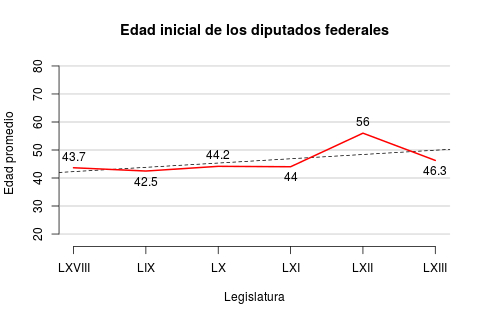

La primera década del nuevo siglo introdujo al debate de la política mexicana la impetuosa necesidad de hacerla más accesible a los sectores más jóvenes de la sociedad. Esta necesidad de un "relevo generacional", que no es nueva, ha asumido dos retos fundamentales para su realización: lograr una mayor representatividad de los jóvenes mexicanos y generar mayor participación democrática. La apuesta es que el éxito en el primero tendrá una repercusión positiva en el segundo. A pesar de que la modernización de la política mexicana ha traído consigo mayores oportunidades para la inclusión de actores políticos más jóvenes, el esfuerzo sigue siendo deficiente.
El presente artículo intentará demostrar, en primera instancia, que el relevo generacional no ha mostrado cambios tangibles en las últimas décadas, por lo menos en lo que respecta a la Cámara de Diputados del Congreso de la Unión. Luego, resaltará la necesidad de implantar nuevos y urgentes mecanismos para promover dicho relevo ante la gradual introducción de la reelección consecutiva de legisladores y alcaldes en los próximos años.
Como se mencionó anteriormente, uno de los retos que ha asumido el relevo generacional ha sido la búsqueda de mayor representatividad juvenil en los órganos del gobierno. En cuanto al órgano de representación popular por excelencia, la cámara baja del Congreso, nuestra investigación encontró que los intentos por acelerar el cambio generacional no han tenido efectos significativos.

Figura 1: La edad promedio de los nuevos diputados por Legislatura, 1994-2015. La línea punteada es una regresión lineal del promedio contra el año.
Para comprobarlo, estimamos la edad promedio de los diputados de las seis legislaturas más recientes (1994-2015) en busca de cambios. El periodo cubre la democratización del país y su proceso de consolidación. Rastreamos la edad que tenían los legisladores al inicio del primer periodo ordinario de sesiones de la legislatura respectiva para obtener el promedio de todos los diputados. En el caso de las Legislaturas LX, LXI y LXIII obtuvimos el dato de una muestra aleatoria de 100 diputados (60 de mayoría y 40 plurinominales). Para las demás obtuvimos las edades de todos los representantes. La Gráfica 1 y el Cuadro 1 resportan nuestros hallazgos.
| Año | Muestra o | Edad | Edad promedio | ||
|---|---|---|---|---|---|
| Legislatura | inaugural | universo | promedio | del electorado | Diferencia |
| LXVIII | 2000 | universo | 43.7 | 37.4 | +6.3 |
| LIX | 2003 | universo | 42.5 | 38.2 | +4.3 |
| LX | 2006 | muestra | 44.1 | 38.9 | +5.2 |
| LXI | 2009 | muestra | 44.0 | 39.7 | +4.3 |
| LXII | 2012 | universo | 56.0 | 40.4 | +15.6 |
| LXIII | 2015 | muestra | 46.3 | 41.2 | +5.1 |
| Todas | 46.1 | 39.3 | +6.8 |
En los 15 años que observamos, el diputado promedio tenía 46.1 años al iniciar su mandato. Para dar perspectiva, es la edad que tiene hoy la ex-Canciller Claudia Ruiz Massieu o la que tenía Carlos Salinas al terminar su mandato presidencial. Más revelador, le saca casi siete años a la edad promedio de los mexicanos en edad de aspirar a ser diputados federales (el Cuadro interpola linealmente las edades intercensales). Y si seguimos la evolución temporal notamos que, con la excepción de la LXII (cuando el diputado medio tenía 56 años), la edad promedio es bastante similar entre Legislaturas—el promedio osciló entre los 42 y los 46 años. Es a penas notable en la Gráfica una levísima tendencia al alza, que parecería relacionarse en parte con la peculiar LXII pero ser independiente del origen de los datos (muestra o universo).
Los datos sugieren que los intentos por incorporar más jóvenes no han surtido efecto en la cámara de diputados. Esto permite concluir que, con la democratización y la fragmentación partidista de la representación, no se ha dado un cambio significativo en la estructura de edades dentro de la cámara. Esto llama la atención debido a los constantes intentos por integrar a actores políticos jóvenes. Ahora bien, ¿qué podemos esperar que ocurra con la edad de los legisladores una vez que surta efecto la introducción de la reelección consecutiva en 2021?
Para tratar de ejemplificar lo que podría ocurrir con la reelección legislativa consecutiva mostraremos el caso de la Cámara de Representantes del Congreso de Estados Unidos. De acuerdo con los datos del portal electrónico del Wall Street Journal, la edad promedio en dicho órgano han aumentado. Si al inicio de la década de 1980 la edad media era 49.1, para 2011 alcanzó los 57.6 años, el máximo de la serie.1 ¿A qué se debe este cambio sostenido en las últimas tres décadas?
Muchos autores, (p.ej. Jacobson 1997) han estudiado el fenómeno llamado "incumbency advantage" (que puede traducirse como ventaja del ocupante). El término se refiere, a las ventajas que tiene un congresista en funciones frente a los retadores en el distrito. Entre las ventajas que distingue la literatura se encuentran las constantes visitas (financiadas públicamente) de los congresistas a sus distritos para promover su trabajo, un equipo organizado (también pagado por el Congreso), y el diseño estratégico de distritos que escudan al representante de la competencia, entre otros. Esto termina por moldear las probabilidades electorales a favor del ocupante, manteniéndolo por largos periodos en el Congreso.
De acuerdo a los datos del sitio oficial de OpenSecrets,2 un congresista activo tiene más del 80% de probabilidades de ser reelegido en cada periodo desde 1980 hasta el presente, en algunas ocasiones la cifra se ha acercado al total de los asientos en juego durante la elección. Esta alta frecuencia de reelección es claramente efecto de la citada ventaja del ocupante que ha crecido en décadas recientes y podría ser la razón por la cual los promedios de las edades de los congresistas han ido aumentando de manera constante desde dicho periodo. Es de esta manera como se podría concluir que la posibilidad de reelección tiende a mantener a los representantes en sus asientos por un cierto periodo de tiempo y esto evita que se produzca una mayor entrada de políticos jóvenes a la vida pública.
A pesar de ser muy pronto para asegurar que en México se pudiera repetir el fenómeno de la reelección constante de los legisladores, como en el caso estadounidense, es importante no perder de vista la patente posibilidad de que esto pudiese llegar a ocurrir de manera parcial. La evidencia muestra cómo la edad se mantiene prácticamente constante a lo largo de diversos periodos legislativos. No sería sorprendente que, al introducirse la reelección consecutiva, la edad promedio comenzara a incrementarse como se ha observado recientemente en el Congreso americano.
Ante esta situación, es necesario buscar el cómo reforzar los mecanismos intrapartidistas para la postulación y apoyo a candidatos jóvenes que permitan el cambio generacional dentro del gobierno y así, le otorguen mayor representación a uno de los grupos poblacionales más grandes del país. Todo parece indicar que la representación proporcional jugará un papel fundamental en el control del promedio de la edad de los congresistas y, sobre todo, en la búsqueda de un "relevo generacional" mucho más efectivo y exitoso.
Jacobson, G. C. (1997). The Politics of Congressional Elections. E.U.A.: Longman.
Dato calculado por los autores a partir de la información presentada en: http://online.wsj.com/public/resources/documents/info-CONGRESS_AGES_1009.html (consultada el 12 de junio de 2017).
Datos de las gráficas en: https://www.opensecrets.org/overview/reelect.php (consultada el 12 de junio de 2017).